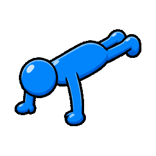

Rejected
1. Smooth Rear Pass
- Good: smoother rear shape, closer to the requested blue-guy feel.
- Wrong: feet floated and jumped frame to frame instead of rotating from planted toes.
- Wrong: no real floor/contact plane was being obeyed.
Lesson: good silhouette is not enough. Push-ups need a physical contact plane before polish.